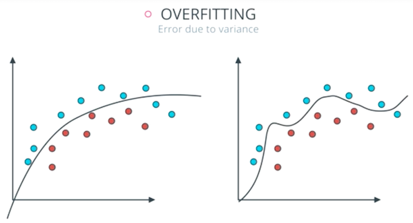

Capítulo 10 Regularización Elasticnet
En muchas técnicas de aprendizaje automático, el aprendizaje consiste en encontrar los coeficientes que minimizan una función de costo. Un modelo estándar de mínimos cuadrados tiende a tener alguna variación, es decir, este modelo no se generalizará bien para un conjunto de datos diferente a sus datos de entrenamiento.
La regularización consiste en añadir una penalización a la función de costo. Esta penalización produce modelos más simples que generalizan mejor y evita el riesgo de sobre-ajuste.
El procedimiento de ajuste implica una función de pérdida, conocida como suma de cuadrados residual o RSS. Los coeficientes \(\beta\) se eligen de manera que minimicen esta función de pérdida.
\[RSS = \sum_{i=1}^n\left(y_i - \beta_0- \sum_{i=1}^p \beta_jx_{ij}\right)^2\]
Esto ajustará los coeficientes en función de sus datos de entrenamiento. Si hay ruido en los datos de entrenamiento, los coeficientes estimados no se generalizarán bien a los datos futuros. Aquí es donde entra la regularización y reduce o regulariza estas estimaciones aprendidas hacia cero.
En esta sección se verán las regularizaciones más usadas en machine learning:
- Ridge (conocida también como L2)
- Lasso (también conocida como L1)
- ElasticNet que combina tanto Lasso como Ridge.
Para cada una de estas regularizaciones ajustaremos un modelo de regresión lineal al conjunto de datos de viviendas de Ames con ayuda del paquete de tidymodels llamado parsnip.

10.1 Regularización Ridge
En este tipo de regularización RSS se modifica agregando una cantidad de contracción a los coeficientes, los cuales se estiman minimizando esta función. \(\lambda\) es el parámetro de ajuste que decide cuánto queremos penalizar la flexibilidad de el modelo.
\[\sum_{i=1}^n\left(y_i - \beta_0- \sum_{i=1}^p \beta_jx_{ij}\right)^2 + \lambda \sum_{j=1}^p \beta_j^2 = RSS + \lambda \sum_{j=1}^p \beta_j^2\]
El aumento de la flexibilidad de un modelo está representado por el aumento de sus coeficientes, si se desea minimizar la función anterior, los coeficientes deben ser pequeños.
Así es como la técnica de regresión de Ridge evita que los coeficientes aumenten demasiado. Además, reduce la asociación estimada de cada variable con la respuesta excepto la intersección \(\beta_0\). Esta intersección es una medida del valor medio de la respuesta cuando \(x_{i1} = x_{i2} =\dots= x_{ip} = 0\).
Cuando \(\lambda = 0\), el término de penalización no tiene efecto y las estimaciones serán iguales a mínimos cuadrados.
A medida que \(\lambda \rightarrow \infty\), el impacto de la penalización por contracción aumenta, y las estimaciones se acercarán a cero.
La selección de un buen valor de \(\lambda\) es fundamental. Las estimaciones de coeficientes producidas por este método también se conocen como la norma L2.
Nota: Es necesario estandarizar los predictores o llevarlos a la misma escala antes de aplicar esta regularización.
10.2 Regularización Lasso
Lasso es otra variación, en la que se minimiza la función RSS. Utiliza \(|\beta_j|\) en lugar de los cuadrados de \(\beta\) como penalización. Las estimaciones de coeficientes producidas por este método también se conocen como la norma L1.
\[\sum_{i=1}^n\left(y_i - \beta_0- \sum_{i=1}^p \beta_jx_{ij}\right)^2 + \lambda \sum_{j=1}^p |\beta_j| = RSS + \lambda \sum_{j=1}^p |\beta_j|\]
Cuando \(\lambda = 0\), el término de penalización no tiene efecto y las estimaciones serán iguales a mínimos cuadrados.
A medida que \(\lambda \rightarrow \infty\), el impacto de la penalización por contracción aumenta, y las estimaciones se convierten en cero (eliminando variables).
Este método de regularización permite eliminar coeficientes con alta variación, lo cual ayuda a la selección de variables.
10.3 Comparación entre Ridge y Lasso
La regresión Ridge se puede considerar como la solución de una ecuación, donde la suma de los cuadrados de los coeficientes es menor o igual que \(s\), donde \(s\) es una constante que existe para cada valor del factor de contracción \(\lambda\)
\[\beta_1^2 + \beta_2^2 \leq s\]
Esto implica que los coeficientes de la regresión Ridge tienen el RSS (función de pérdida) más pequeño para todos los puntos que se encuentran dentro del círculo dado por la función de restricción \(\beta_1^2 + \beta_2^2 \leq s\).
Y en la regresión Lasso se puede considerar como una ecuación en la que la suma del módulo de coeficientes es menor o igual que \(s\).
\[|\beta_1| + |\beta_2| \leq s\]
Esto implica que los coeficientes de lasso tienen la RSS (función de pérdida) más pequeña para todos los puntos que se encuentran dentro del diamante dado por la función de restricción \(|\beta_1| + |\beta_2| \leq s\)

La imagen de arriba muestra las funciones de restricción (áreas verdes) para Lasso (izquierda) y Ridge (derecha), junto con contornos para RSS (elipse roja).
Para un valor muy grande de \(s\), las regiones verdes contendrán el centro de la elipse, lo que hará que las estimaciones de los coeficientes de ambas técnicas de regresión sean iguales a las estimaciones de mínimos cuadrados. Pero este no es el caso en la imagen de arriba.
En este caso, las estimaciones del coeficiente de regresión de Lasso y Ridge vienen dadas por el primer punto en el que una elipse contacta con la región de restricción. Dado que la regresión Ridge tiene una restricción circular sin puntos agudos, esta intersección generalmente no ocurrirá en un eje, por lo que las estimaciones del coeficiente de regresión de Ridge serán exclusivamente distintas de cero.
Sin embargo, la restricción de Lasso tiene esquinas en cada uno de los ejes, por lo que la elipse a menudo intersectará la región de restricción en un eje. Cuando esto ocurre, uno de los coeficientes será igual a cero. En dimensiones más altas, muchas de las estimaciones de coeficientes pueden ser iguales a cero simultáneamente.
Desventajas
Regresión Ridge: Reducirá los coeficientes de los predictores menos importantes, muy cerca de cero. Pero nunca los hará exactamente cero. En otras palabras, el modelo final incluirá todos los predictores.
Regresión Lasso: La penalización L1 tiene el efecto de forzar algunas de las estimaciones de coeficientes a ser exactamente iguales a cero cuando el parámetro de ajuste \(\lambda\) es suficientemente grande. Por lo tanto, este método realiza una selección de variables.
10.4 ElasticNet
ElasticNet surgió por primera vez como resultado de la crítica a Lasso, cuya selección de variables puede ser demasiado dependiente de los datos y, por lo tanto, inestable. La solución es combinar las penalizaciones de la regresión de Ridge y Lasso para obtener lo mejor de ambas regularizaciones.
ElasticNet tiene como objetivo minimizar la siguiente función de pérdida:
\[\frac{\sum_{i=1}^n\left(y_i - \beta_0- \sum_{i=1}^p \beta_jx_{ij}\right)^2}{2n} + \lambda\left( ({1-\alpha}) \sum_{j=1}^p|\beta_j| + \alpha \sum_{j=1}^p \beta_j ^2\right)\]
\[= \frac{RSS}{2n}+ \lambda\left( ({1-\alpha}) \sum_{j=1}^p|\beta_j| + \alpha \sum_{j=1}^p \beta_j ^2\right)\]
donde \(\alpha \in [0,1]\) es el parámetro de mezcla entre la regularización Ridge \((\alpha = 0)\) y la regularización Lasso \((\alpha = 1)\).
La combinación de ambas penalizaciones suele dar lugar a buenos resultados. Una estrategia frecuentemente utilizada es asignarle casi todo el peso a la penalización L1 ( \(\alpha \approx 1\)) para conseguir seleccionar predictores y menos peso a la regularización \(L2\) para dar cierta estabilidad en el caso de que algunos predictores estén correlacionados.

10.5 Implementación en R
10.5.1 Regresión
Utilizando el modelo linear_reg() del paquete parsnip. Hay varios mecanismos que pueden realizar la regularización/penalización, los paquetes glmnet, sparklyr, keras o stan.
Usemos el primero aquí. El paquete glmnet solo implementa un método que no es de fórmula, pero parsnip permitirá que se use cualquiera de ellos.
Cuando se utiliza la regularización, los predictores deben de centrarse y escalarse primero antes de pasar al modelo. El método de la fórmula no lo hará automáticamente, por lo que tendremos que hacerlo nosotros mismos como se hizo en la sección 4.6 Preparación de conjunto de datos con la receta receta_casas.
En R existen dos parámetros que nos permiten hacer la regularización:
penalty: Es un número no negativo que representa la cantidad total de regularización (solo glmnet, keras y spark).mixture: Es un número entre cero y uno (inclusivo) que es la proporción de regularización L1 en el modelo. Cuandomixture = 1, es un modelo de Lasso puro, mientras quemixture = 0indica que se está utilizando un modelo Ridge.
Paso 1: Separación inicial de datos ( test, train, KFCV )
library(tidymodels)
data(ames)
set.seed(4595)
ames_split <- initial_split(ames, prop = 0.75)
ames_train <- training(ames_split)
ames_test <- testing(ames_split)
ames_folds <- vfold_cv(ames_train)Contando con datos de entrenamiento, procedemos a realizar el feature engineering para extraer las mejores características que permitirán realizar las estimaciones en el modelo.
Paso 2: Pre-procesamiento e ingeniería de variables
receta_casas <- recipe(
Sale_Price ~ Gr_Liv_Area + TotRms_AbvGrd + Exter_Cond + Bsmt_Cond +
Year_Sold + Year_Remod_Add,
data = ames_train) %>%
step_mutate(
Age_House = Year_Sold - Year_Remod_Add,
Exter_Cond = forcats::fct_collapse(Exter_Cond, Good = c("Typical", "Good", "Excellent"))) %>%
step_relevel(Exter_Cond, ref_level = "Good") %>%
step_normalize(all_numeric_predictors()) %>%
step_dummy(all_nominal_predictors()) %>%
step_interact(~ matches("Bsmt_Cond"):TotRms_AbvGrd) %>%
prep()
receta_casas## Recipe
##
## Inputs:
##
## role #variables
## outcome 1
## predictor 6
##
## Training data contained 2197 data points and no missing data.
##
## Operations:
##
## Variable mutation for ~Year_Sold - Year_Remod_Add, ~forcats::fct... [trained]
## Re-order factor level to ref_level for Exter_Cond [trained]
## Centering and scaling for Gr_Liv_Area, TotRms_AbvGrd, Year_Sold, Year_Rem... [trained]
## Dummy variables from Exter_Cond, Bsmt_Cond [trained]
## Interactions with (Bsmt_Cond_Fair + Bsmt_Cond_Good + Bsmt_Cond_No_Ba... [trained]Recordemos que la función recipe() solo son los pasos a seguir, necesitamos usar la función prep() que nos devuelve una receta actualizada con las estimaciones y la función juice() que nos devuelve la matriz de diseño.
Una vez que la receta de transformación de datos está lista, procedemos a implementar el pipeline del modelo de interés.
Paso 3: Selección de tipo de modelo con hiperparámetros iniciales
# install.packages("glmnet")
elasticnet_regression_model <- linear_reg(
mixture = tune(),
penalty = tune()) %>%
set_mode("regression") %>%
set_engine("glmnet")Paso 4: Inicialización de workflow o pipeline
elasticnet_workflow <- workflow() %>%
add_model(elasticnet_regression_model) %>%
add_recipe(receta_casas)Paso 5: Creación de grid search
set.seed(195628)
elasticnet_param_grid <- grid_random(
penalty(range = c(-15, 0), trans = log10_trans()),
mixture(range = c(0,1)),
size = 100
)
ctrl_grid <- control_grid(save_pred = T, verbose = T)Paso 6: Entrenamiento de modelos con hiperparámetros definidos
library(doParallel)
UseCores <- detectCores() - 1
cluster <- makeCluster(UseCores)
registerDoParallel(cluster)
# Ajuste de parámetros
elt1 <- Sys.time()
elasticnet_tune_result <- tune_grid(
elasticnet_workflow,
resamples = ames_folds,
grid = elasticnet_param_grid,
metrics = metric_set(mae, mape, rmse, rsq),
control = ctrl_grid
)
elt2 <- Sys.time(); elt2 - elt1
stopCluster(cluster)
elasticnet_tune_result %>% saveRDS("models/elasticnet_model_reg.rds")elasticnet_tune_result <- readRDS("models/elasticnet_model_reg.rds")Paso 7: Análisis de métricas de error e hiperparámetros (Vuelve al paso 3, si es necesario)
Podemos obtener las métricas de cada fold con el siguiente código:
collect_metrics(elasticnet_tune_result)## # A tibble: 400 × 8
## penalty mixture .metric .estimator mean n std_err .config
## <dbl> <dbl> <chr> <chr> <dbl> <int> <dbl> <chr>
## 1 3.81e-12 0.0139 mae standard 32607. 10 544. Preprocessor1_…
## 2 3.81e-12 0.0139 mape standard 19.1 10 0.268 Preprocessor1_…
## 3 3.81e-12 0.0139 rmse standard 48347. 10 1024. Preprocessor1_…
## 4 3.81e-12 0.0139 rsq standard 0.641 10 0.0176 Preprocessor1_…
## 5 4.32e- 2 0.0160 mae standard 32609. 10 543. Preprocessor1_…
## 6 4.32e- 2 0.0160 mape standard 19.1 10 0.268 Preprocessor1_…
## 7 4.32e- 2 0.0160 rmse standard 48347. 10 1025. Preprocessor1_…
## 8 4.32e- 2 0.0160 rsq standard 0.641 10 0.0177 Preprocessor1_…
## 9 7.31e- 8 0.0361 mae standard 32617. 10 541. Preprocessor1_…
## 10 7.31e- 8 0.0361 mape standard 19.1 10 0.268 Preprocessor1_…
## # … with 390 more rowsEn la siguiente gráfica observamos las distintas métricas de error asociados a los hiperparámetros elegidos:
elasticnet_tune_result %>% autoplot()En la siguiente gráfica observamos el error cuadrático medio de las distintas métricas con distintos números de vecinos.
elasticnet_tune_result %>% autoplot(metric = "rsq")Paso 8: Selección de modelo a usar
Con el siguiente código obtenemos los mejores 10 modelos respecto al rmse.
show_best(elasticnet_tune_result, n = 10, metric = "rmse")## # A tibble: 10 × 8
## penalty mixture .metric .estimator mean n std_err .config
## <dbl> <dbl> <chr> <chr> <dbl> <int> <dbl> <chr>
## 1 6.18e- 2 0.306 rmse standard 48342. 10 1029. Preprocessor1_Model…
## 2 3.03e-11 0.301 rmse standard 48344. 10 1030. Preprocessor1_Model…
## 3 8.01e- 6 0.301 rmse standard 48344. 10 1030. Preprocessor1_Model…
## 4 9.54e-12 0.246 rmse standard 48346. 10 1030. Preprocessor1_Model…
## 5 1.27e- 8 0.278 rmse standard 48346. 10 1030. Preprocessor1_Model…
## 6 1.62e-15 0.252 rmse standard 48346. 10 1029. Preprocessor1_Model…
## 7 1.91e- 9 0.283 rmse standard 48346. 10 1030. Preprocessor1_Model…
## 8 2.17e-15 0.269 rmse standard 48346. 10 1030. Preprocessor1_Model…
## 9 6.99e- 5 0.283 rmse standard 48346. 10 1030. Preprocessor1_Model…
## 10 3.81e-12 0.0139 rmse standard 48347. 10 1024. Preprocessor1_Model…Ahora obtendremos el modelo que mejor desempeño tiene tomando en cuenta el rmse y haremos las predicciones del conjunto de prueba con este modelo.
best_elasticnet_regression_model <- select_best(elasticnet_tune_result, metric = "rmse")
best_elasticnet_regression_model## # A tibble: 1 × 3
## penalty mixture .config
## <dbl> <dbl> <chr>
## 1 0.0618 0.306 Preprocessor1_Model027Paso 9: Ajuste de modelo final con todos los datos (Vuelve al paso 2, si es necesario)
final_elasticnet_regression_model <- elasticnet_workflow %>%
finalize_workflow(best_elasticnet_regression_model) %>%
fit(data = ames_train)Este último objeto es el modelo final entrenado, el cual contiene toda la información del pre-procesamiento de datos, por lo que en caso de ponerse en producción el modelo, sólo se necesita de este último elemento para poder realizar nuevas predicciones.
Antes de pasar al siguiente paso, es importante validar que hayamos hecho un uso correcto de las variables predictivas. En este momento es posible detectar variables que no estén aportando valor o variables que no debiéramos estar usando debido a que cometeríamos data leakage. Para enfrentar esto, ayuda estimar y ordenar el valor de importancia de cada variable en el modelo.
library(vip)
final_elasticnet_regression_model %>%
extract_fit_parsnip() %>%
vip(geom = "col") +
ggtitle("Importancia de las variables")Paso 10: Validar poder predictivo con datos de prueba
Imaginemos por un momento que pasa un mes de tiempo desde que hicimos nuestro modelo, es hora de ponerlo a prueba prediciendo valores de nuevos elementos:
results <- predict(final_elasticnet_regression_model, ames_test) %>%
dplyr::bind_cols(Sale_Price = ames_test$Sale_Price) %>%
dplyr::rename(pred_elasticnet_reg = .pred)
results## # A tibble: 733 × 2
## pred_elasticnet_reg Sale_Price
## <dbl> <int>
## 1 95091. 105000
## 2 175072. 185000
## 3 189332. 180400
## 4 85542. 141000
## 5 244179. 210000
## 6 214542. 216000
## 7 164313. 149900
## 8 122589. 105500
## 9 122589. 88000
## 10 164965. 146000
## # … with 723 more rowsMétricas de desempeño
Ahora para calcular las métricas de desempeño usaremos la paquetería MLmetrics. Es posible definir nuestro propio conjunto de métricas que deseamos reportar creando el objeto metric_set:
library(MLmetrics)
multi_metric <- metric_set(mae, mape, rmse, rsq, ccc)
multi_metric(results, truth = Sale_Price, estimate = pred_elasticnet_reg) %>%
mutate(.estimate = round(.estimate, 2)) %>%
select(-.estimator)## # A tibble: 5 × 2
## .metric .estimate
## <chr> <dbl>
## 1 mae 34092
## 2 mape 20.2
## 3 rmse 49397
## 4 rsq 0.63
## 5 ccc 0.76results %>%
ggplot(aes(x = pred_elasticnet_reg, y = Sale_Price)) +
geom_point() +
geom_abline(color = "red") +
xlab("Prediction") +
ylab("Observation") +
ggtitle("Comparisson")10.5.2 Clasificación
Paso 1: Separación inicial de datos (test, train)
telco <- read_csv("data/Churn.csv")
set.seed(1234)
telco_split <- initial_split(telco, prop = .70)
telco_train <- training(telco_split)
telco_test <- testing(telco_split)
telco_folds <- vfold_cv(telco_train)
telco_folds## # 10-fold cross-validation
## # A tibble: 10 × 2
## splits id
## <list> <chr>
## 1 <split [4437/493]> Fold01
## 2 <split [4437/493]> Fold02
## 3 <split [4437/493]> Fold03
## 4 <split [4437/493]> Fold04
## 5 <split [4437/493]> Fold05
## 6 <split [4437/493]> Fold06
## 7 <split [4437/493]> Fold07
## 8 <split [4437/493]> Fold08
## 9 <split [4437/493]> Fold09
## 10 <split [4437/493]> Fold10Paso 2: Pre-procesamiento e ingeniería de variables
telco_rec <- recipe(
Churn ~ customerID + TotalCharges + MonthlyCharges + SeniorCitizen + Contract,
data = telco_train) %>%
update_role(customerID, new_role = "id variable") %>%
step_mutate(Contract = as.factor(Contract)) %>%
step_impute_median(all_numeric_predictors()) %>%
step_normalize(all_numeric_predictors()) %>%
step_dummy(all_nominal_predictors()) %>%
prep()
telco_rec## Recipe
##
## Inputs:
##
## role #variables
## id variable 1
## outcome 1
## predictor 4
##
## Training data contained 4930 data points and 10 incomplete rows.
##
## Operations:
##
## Variable mutation for ~as.factor(Contract) [trained]
## Median imputation for TotalCharges, MonthlyCharges, SeniorCitizen [trained]
## Centering and scaling for TotalCharges, MonthlyCharges, SeniorCitizen [trained]
## Dummy variables from Contract [trained]Paso 3: Selección de tipo de modelo con hiperparámetros iniciales
elasticnet_class_model <- logistic_reg(
mixture = tune(),
penalty = tune()) %>%
set_mode('classification') %>%
set_engine("glmnet")
elasticnet_class_model## Logistic Regression Model Specification (classification)
##
## Main Arguments:
## penalty = tune()
## mixture = tune()
##
## Computational engine: glmnetPaso 4: Inicialización de workflow o pipeline
elasticnet_workflow <- workflow() %>%
add_model(elasticnet_class_model) %>%
add_recipe(telco_rec)
elasticnet_workflow## ══ Workflow ══════════════════
## Preprocessor: Recipe
## Model: logistic_reg()
##
## ── Preprocessor ──────────────
## 4 Recipe Steps
##
## • step_mutate()
## • step_impute_median()
## • step_normalize()
## • step_dummy()
##
## ── Model ─────────────────────
## Logistic Regression Model Specification (classification)
##
## Main Arguments:
## penalty = tune()
## mixture = tune()
##
## Computational engine: glmnetPaso 5: Creación de grid search
elasticnet_param_grid <- grid_random(
penalty(
range = c(-4, 0.1),
trans = log10_trans()
),
dials::mixture(range = c(0, 1)),
size = 50
)
elasticnet_param_grid## # A tibble: 50 × 2
## penalty mixture
## <dbl> <dbl>
## 1 0.000172 0.756
## 2 0.194 0.460
## 3 0.0430 0.978
## 4 0.0102 0.909
## 5 0.000735 0.635
## 6 0.00285 0.129
## 7 0.172 0.965
## 8 0.0433 0.723
## 9 0.000138 0.643
## 10 0.000504 0.239
## # … with 40 more rowsPaso 6: Entrenamiento de modelos con hiperparámetros definidos
library(doParallel)
UseCores <- detectCores() - 1
cluster <- makeCluster(UseCores)
registerDoParallel(cluster)
ctrl_grid <- control_grid(save_pred = T, verbose = T)
etnt1 <- Sys.time()
elasticnet_tune_result <- tune_grid(
elasticnet_workflow,
resamples = telco_folds,
grid = elasticnet_param_grid,
metrics = metric_set(roc_auc, pr_auc)
)
etn2 <- Sys.time(); etn2 - etnt1
stopCluster(cluster)
elasticnet_tune_result %>% saveRDS("models/elasticnet_class_model.rds")Paso 7: Análisis de métricas de error e hiperparámetros (Vuelve al paso 3, si es necesario)
elasticnet_tune_result <- readRDS("models/elasticnet_class_model.rds")
collect_metrics(elasticnet_tune_result)## # A tibble: 100 × 8
## penalty mixture .metric .estimator mean n std_err .config
## <dbl> <dbl> <chr> <chr> <dbl> <int> <dbl> <chr>
## 1 0.0494 0.000985 pr_auc binary 0.928 10 0.00365 Preprocessor1_Model…
## 2 0.0494 0.000985 roc_auc binary 0.822 10 0.00629 Preprocessor1_Model…
## 3 0.000837 0.0152 pr_auc binary 0.928 10 0.00362 Preprocessor1_Model…
## 4 0.000837 0.0152 roc_auc binary 0.823 10 0.00626 Preprocessor1_Model…
## 5 0.181 0.0240 pr_auc binary 0.927 10 0.00381 Preprocessor1_Model…
## 6 0.181 0.0240 roc_auc binary 0.819 10 0.00643 Preprocessor1_Model…
## 7 0.155 0.0244 pr_auc binary 0.927 10 0.00380 Preprocessor1_Model…
## 8 0.155 0.0244 roc_auc binary 0.819 10 0.00645 Preprocessor1_Model…
## 9 0.0147 0.0368 pr_auc binary 0.929 10 0.00359 Preprocessor1_Model…
## 10 0.0147 0.0368 roc_auc binary 0.823 10 0.00626 Preprocessor1_Model…
## # … with 90 more rowsEn la siguiente gráfica observamos las distintas métricas de error asociados a los hiperparámetros elegidos:
autoplot(elasticnet_tune_result)show_best(elasticnet_tune_result, n = 10, metric = "roc_auc") ## # A tibble: 10 × 8
## penalty mixture .metric .estimator mean n std_err .config
## <dbl> <dbl> <chr> <chr> <dbl> <int> <dbl> <chr>
## 1 0.00333 0.0764 roc_auc binary 0.823 10 0.00627 Preprocessor1_Model07
## 2 0.00561 0.174 roc_auc binary 0.823 10 0.00628 Preprocessor1_Model11
## 3 0.00513 0.710 roc_auc binary 0.823 10 0.00626 Preprocessor1_Model34
## 4 0.00283 0.739 roc_auc binary 0.823 10 0.00626 Preprocessor1_Model38
## 5 0.000202 0.792 roc_auc binary 0.823 10 0.00626 Preprocessor1_Model40
## 6 0.000216 0.674 roc_auc binary 0.823 10 0.00626 Preprocessor1_Model31
## 7 0.00272 0.442 roc_auc binary 0.823 10 0.00627 Preprocessor1_Model19
## 8 0.00383 0.717 roc_auc binary 0.823 10 0.00625 Preprocessor1_Model35
## 9 0.000101 0.682 roc_auc binary 0.823 10 0.00625 Preprocessor1_Model32
## 10 0.000232 0.731 roc_auc binary 0.823 10 0.00626 Preprocessor1_Model37show_best(elasticnet_tune_result, n = 10, metric = "pr_auc") ## # A tibble: 10 × 8
## penalty mixture .metric .estimator mean n std_err .config
## <dbl> <dbl> <chr> <chr> <dbl> <int> <dbl> <chr>
## 1 0.0197 0.369 pr_auc binary 0.929 10 0.00357 Preprocessor1_Model18
## 2 0.0201 0.613 pr_auc binary 0.929 10 0.00358 Preprocessor1_Model29
## 3 0.0132 0.120 pr_auc binary 0.929 10 0.00359 Preprocessor1_Model08
## 4 0.0187 0.702 pr_auc binary 0.929 10 0.00357 Preprocessor1_Model33
## 5 0.00513 0.710 pr_auc binary 0.929 10 0.00361 Preprocessor1_Model34
## 6 0.0272 0.916 pr_auc binary 0.929 10 0.00357 Preprocessor1_Model46
## 7 0.00942 0.851 pr_auc binary 0.929 10 0.00360 Preprocessor1_Model43
## 8 0.0147 0.0368 pr_auc binary 0.929 10 0.00359 Preprocessor1_Model05
## 9 0.00561 0.174 pr_auc binary 0.929 10 0.00360 Preprocessor1_Model11
## 10 0.0127 0.923 pr_auc binary 0.929 10 0.00360 Preprocessor1_Model47Paso 8: Selección de modelo a usar
best_elasticnet_class_model <- select_best(elasticnet_tune_result, metric = "pr_auc")
best_elasticnet_class_model## # A tibble: 1 × 3
## penalty mixture .config
## <dbl> <dbl> <chr>
## 1 0.0197 0.369 Preprocessor1_Model18best_elasticnet_class_model_1se <- elasticnet_tune_result %>%
select_by_one_std_err(metric = "pr_auc", "pr_auc")
best_elasticnet_class_model_1se## # A tibble: 1 × 10
## penalty mixture .metric .estimator mean n std_err .config .best .bound
## <dbl> <dbl> <chr> <chr> <dbl> <int> <dbl> <chr> <dbl> <dbl>
## 1 0.0494 0.000985 pr_auc binary 0.928 10 0.00365 Preproce… 0.929 0.925Paso 9: Ajuste de modelo final con todos los datos (Vuelve al paso 2, si es necesario)
final_elasticnet_class_model <- elasticnet_workflow %>%
#finalize_workflow(best_elasticnet_class_model) %>%
finalize_workflow(best_elasticnet_class_model_1se) %>%
fit(data = telco_test)Como hemos hablado anteriormente, este último objeto es el modelo final entrenado, el cual contiene toda la información del pre-procesamiento de datos, por lo que en caso de ponerse en producción el modelo, sólo se necesita de este último elemento para poder realizar nuevas predicciones.
Antes de pasar al siguiente paso, es importante validar que hayamos hecho un uso correcto de las variables predictivas. En este momento es posible detectar variables que no estén aportando valor o variables que no debiéramos estar usando debido a que cometeríamos data leakage. Para enfrentar esto, ayuda estimar y ordenar el valor de importancia del modelo.
library(vip)
final_elasticnet_class_model %>%
extract_fit_parsnip() %>%
vip::vip() +
ggtitle("Importancia de las variables")Paso 10: Validar poder predictivo con datos de prueba
Imaginemos por un momento que pasa un mes de tiempo desde que hicimos nuestro modelo, es hora de ponerlo a prueba prediciendo valores de nuevos elementos:
class_results <- predict(final_elasticnet_class_model, telco_test, type = "prob") %>%
bind_cols(Churn = telco_test$Churn) %>%
mutate(Churn = factor(Churn, levels = c('Yes', 'No'), labels = c('Yes', 'No')))
class_results## # A tibble: 2,113 × 3
## .pred_No .pred_Yes Churn
## <dbl> <dbl> <fct>
## 1 0.848 0.152 No
## 2 0.442 0.558 Yes
## 3 0.715 0.285 No
## 4 0.922 0.0782 No
## 5 0.921 0.0788 No
## 6 0.543 0.457 No
## 7 0.883 0.117 No
## 8 0.726 0.274 No
## 9 0.700 0.300 Yes
## 10 0.926 0.0738 No
## # … with 2,103 more rowsbind_rows(
roc_auc(class_results, truth = Churn, estimate = .pred_Yes),
pr_auc(class_results, truth = Churn, estimate = .pred_Yes)
)## # A tibble: 2 × 3
## .metric .estimator .estimate
## <chr> <chr> <dbl>
## 1 roc_auc binary 0.824
## 2 pr_auc binary 0.609A continuación, conoceremos el nivel de sensitividad y especificidad para cada punto de corte:
roc_curve_data <- roc_curve(
class_results,
truth = Churn,
estimate = .pred_Yes
)
roc_curve_data## # A tibble: 2,085 × 3
## .threshold specificity sensitivity
## <dbl> <dbl> <dbl>
## 1 -Inf 0 1
## 2 0.0617 0 1
## 3 0.0622 0.000646 1
## 4 0.0625 0.00129 1
## 5 0.0626 0.00194 1
## 6 0.0627 0.00259 1
## 7 0.0629 0.00323 1
## 8 0.0629 0.00388 1
## 9 0.0630 0.00452 1
## 10 0.0630 0.00517 1
## # … with 2,075 more rowsA través de estas métricas es posible crear la curva ROC:
roc_curve_plot <- roc_curve_data %>%
ggplot(aes(x = 1 - specificity, y = sensitivity)) +
geom_path(size = 1, colour = 'lightblue') +
geom_abline() +
coord_equal() +
ggtitle("ROC Curve")+
theme_minimal()
roc_curve_plotDe igual manera, podemos calcular la precisión y cobertura para cada punte de corte:
pr_curve_data <- pr_curve(
class_results,
truth = Churn,
estimate = .pred_Yes
)
pr_curve_data## # A tibble: 2,084 × 3
## .threshold recall precision
## <dbl> <dbl> <dbl>
## 1 Inf 0 1
## 2 0.695 0.00177 1
## 3 0.666 0.00353 1
## 4 0.660 0.00530 1
## 5 0.644 0.00530 0.75
## 6 0.640 0.00707 0.8
## 7 0.638 0.00883 0.833
## 8 0.633 0.0106 0.857
## 9 0.632 0.0124 0.875
## 10 0.629 0.0141 0.889
## # … with 2,074 more rowsY graficar su respectiva curva:
pr_curve_plot <- pr_curve_data %>%
ggplot(aes(x = recall, y = precision)) +
ylim(0, 1) +
geom_abline(slope = -1, intercept = 1) +
geom_path(size = 1, colour = 'lightblue') +
coord_equal() +
ggtitle("Precision vs Recall")+
theme_minimal()
pr_curve_plot